Kazuki Shin | CS 445: Project #1 Hybrid Images
Part I: Hybrid Images
Favorite Hybrid Image
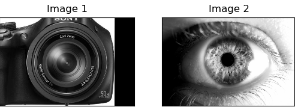
^ Input images for favorite hybrid image
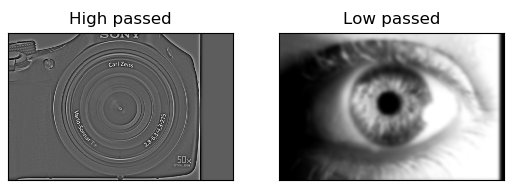
^ Filtered images for favorite hybrid image
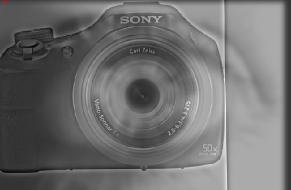
^ Final hybrid image
FFTs for input, filtered, and hybrid images
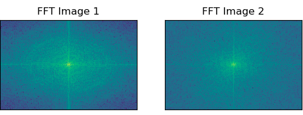
^ FFT of Input Images for favorite hybrid image
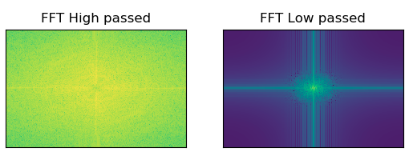
^ FFT of Filtered Images for favorite hybrid image
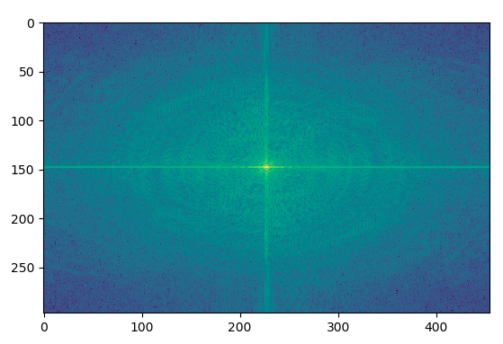
^ FFT of Final hybrid image
Explaination of results for first image
This hybrid imaging works by first taking two images and lining them up in a way so that it is visually appealing.
In my case, I took a clever approach by lining up the retina of the eye to the retina of the camera lens which gave it a very cool and mesmerizing effect.
Then you pass one image into a high pass filter and another in a low pass filter. The high pass filter gave the image a very
textured and contrasted look, while the low pass filter gave the image a blurry look. After combining the two images, the resulting
hybrid image looked great!
Second Good Hybrid Image
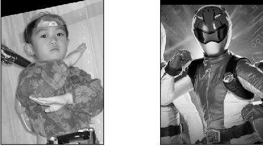
^ Input images for second hybrid image
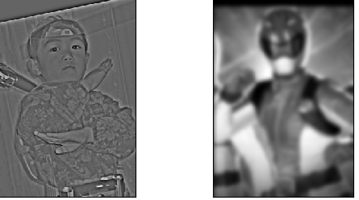
^ Filtered images for second hybrid image
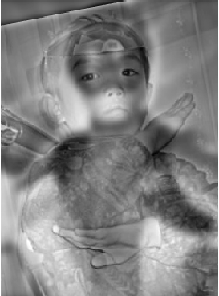
^ Final hybrid image
Explaination of results for second image
For this pair of images, I tried to be creative by choosing two images in which the subject was posing.
This was rather effective as the human figures of both images made it easy for the viewer to see both
low and high pass images in the hybrid image. Overall, this set came out with very nice results.
Bad HybridImage
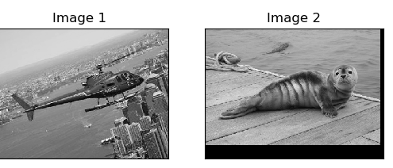
^ Input images for bad hybrid image
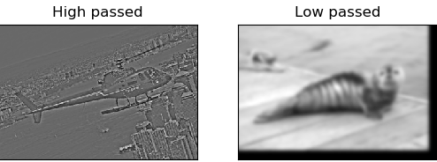
^ Filtered images for bad hybrid image
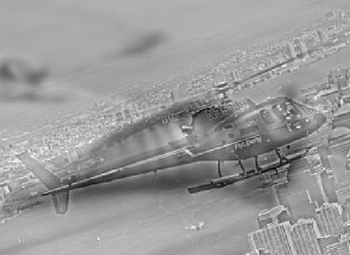
^ Bad hybrid image
Explaination of results for third image
I initially chose these images since both the helicopter and seal body shapes were similar.
However, since the helicopter is so detailed and the seal had little to no contrast, it was
almost impossible to see the seal in the hybrid image making this a failure case. Another reason
could be because this case does not have eyes in which I could line up the images with.
Part II: Image Enhancement
Contrast Enhancement
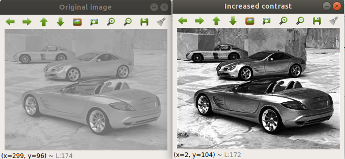
Increased contrast of the image by using cv2.equalizeHist(img)
Color Enhancement
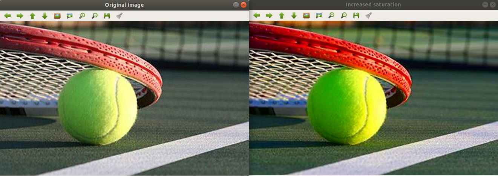
Converted image to HSV then increased the color brightness by increasing just the saturation channel.
Bells and Whistles
Color Shift
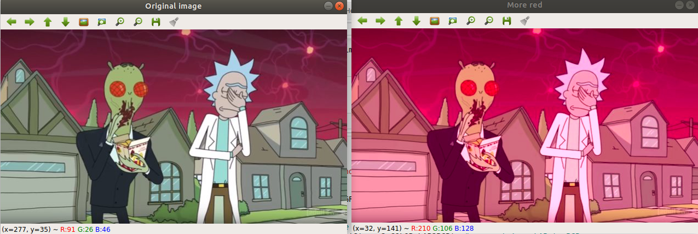
^ Converted image to LAB then increased A channel to make image more red.
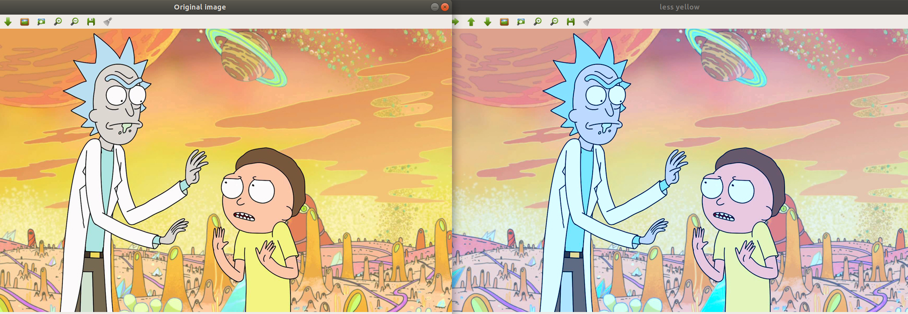
^ Converted image to LAB then decreased the B channel to make image less yellow.